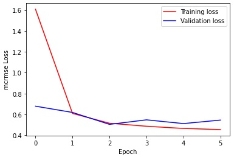
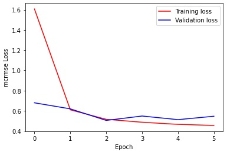

Automated essay scoring for English Language Learners
Figure
Conceptual Review
The main challenge we aim to work towards with this project is the problem of automatic essay scoring of English Language Learners. English Language learners are students who are learning English as a second language. In many ways existing automated graders can be quite biased towards the language proficiency and may overlook the actual conceptual scaffolding of the essay. This challenge is part of an active Kaggle competition [2] and we've used the dataset curated for this competition. The dataset comprises of essays of varying lengths from grades 8 to 12, scored on 6 different scales, namely cohesion, syntax, vocabulary,phraseology, grammar and conventions. These scales are the labels which have been derived from human scoring, and each correspond to a very specific factor the grader is looking for. Each set of labels that are predicted are further avaluated by the MSRMSE loss as we can see in figure 2, which essentially means over the root mean squared error for every column (6 in this case). Nt is the number of scored ground truth target columns, and y and y' are the actual and predicted values, respectively. Since BERT based models learn contextual encodings, we felt it was a great fit for this task where the model should ideally be considering the semantic meaning of the material as opposed to just the grammatical structure.
With this behavior in mind, we picked the work of Yang et al. [1] as our base paper. Their work is largely about general great performance on automatic essay grading. Indeed by the literature review in this paper, transformer based representations seem to perform better than traditional recurrent layers. The main model that is proposed in this paper is called R2BERT, which is essentially the output of a BERT encoding fed into a mapping function, which is a composite function using both regression and ranking. For this model, the input is tokenized in a very specific way. Special tokens are used to denote specific parts of the sentence. [CLS] is used at the beginning of each essay and [SEP] is used to separate new sentences from each other. What makes BERT work really well with contextual information however, is its use of self-attention and masking. BERT is a masked language model, where some random words are masked before learning the encoding, where it tries to predict what important word might have been masked. Self attention assigns weights based on the context of other words in the same locality, so this would work well for a task which is more concerned with semantics. From the results in this work, a combined R2BERT model achieves state of the art performance. We believe that this great performance on general essay grading can be a good base to explore how to improve performance in a more niche environment such as grading ELLs (English Language Learners).
Implementation Details
For this milestone, we explored the dataset and analysed the structural make of the dataset. We discovered that there are different types of essays that the model will need to accomodate for. For example, some are argumentative while others are narrative in their goals. First, we preprocess the data by converting the entire text to lowercase and removing sentence tokens that are not needed such as the newline escape characters. By analysing the dataset we determined that there are a lot of tokens above the 512 range of the BERT input, so the tokenized representations were then converted to split tokens with 512 as constant length. The sentence encodings smaller than this were padded with zeros, while longer sentences were truncated to fit the max length.
Each criterion was explored and we visualized the kind of words that were common in each category amongst the cream of the crop when it came to essay scores per category. For our main model we fine tuned a pretrained BERT model from the HuggingFace transformers library. The output of this BERT gave us learned encodings that were then fed into a fully connected model to get the actual predictions. The loss function we used was MCRMSE. We experimented with different learning rates and 1e-4 and 1e-5 seemed to perform the best. A smaller batch size was significantly better for the validation accuracy here since the total number of samples were relatively low when the depth of the model is considered. For the optimizer we picked Adam. While our implenmentation differed from the base paper in that we did not have a ranking algorithm to go with our regression, it performed very well on the training dataset. It faced some problems when it came to validation loss as it was very evidently overfitting to the training loss.
Initial Findings
Figure 3 shows the word cloud of the most occuring words in every category of grading for top scorers with max scores in each bracket. Interestingly, there are some common themes that reoccur across every cloud. Through additional data analysis we determined that this was the consequence of a common topic. However, even then there are certain words that are apparently more frequently used in essays that scored well in particular brackets. For example, life seems to be more frequently occuring in essays where the vocabulary was very highly scored, but is very hard to spot in the cohesion cloud because it is significantly less frequent. In general, this gives a good indication that these essays were graded more based on topical information as opposed to connecting words.
Figure 4 shows a plot of the lengths of tokens for essays across the training dataset. While most essays are below the threshold of input for BERT (512 tokens), a significant number of essays are much longer, again supporting why they must be truncated.
Figure 5 is a plot of the training and validation MCRMSE losses. Interestingly, it overfits the training data very quickly, while the validation loss keeps bouncing between 0.50 and 0.58. We experimented with different hyperparameters such as changing the batch size and learning rate, but this kind of pattern was still quite apparent. This can in part be attributed to the relatively small amount of data available when compared to how deep the model is. To prevent this and improve performance on the validation dataset, we have identified some strategies which seem promising.
 

Future Plans
Our results on this milestone gave us a great baseline for our task. The model is performing very well on the training dataset, but it seems to struggle with generalizing. Based on our initial findings, we have identified some areas where there can be potential improvements. The original paper combines ranking with regression, which would be a natural next step to incorporate with our fully connected layer. However, given the unique nature of the problem we believe there are other avenues worth exploring. One such path would be to visualize the worst performing encodings and their attention weights, to see where exactly the attention is landing.
Since BERT is not a dynamic masking algorithm, we are considering a simple way to incorporate dynamic masking by adding a single layer at the beginning of the input. The goal of this layer would be to learn good mappings for masking targets over the period of training. Conceptually, this should ideally be the words that are most indicative of good knowldge on the essay, but this cannot be done manually because that would be far too tedious. Therefore, we hope by adding a simple layer the single random initialization of the masks across every epoch in BERT's input can be switched for intelligently selected masked words while keeping the complexity relatively low to prevent overfitting. Figure 6 shows a very basic architechture of what this might look like at a very high level of abstraction.
Team Members
1. Tanmay Khokle
2. Neha Yadav